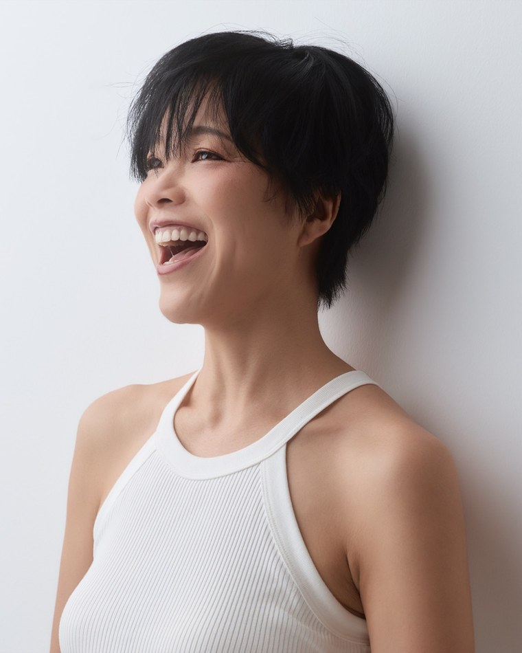

10月20日（火）無料オンライン講座の
お申し込みは締め切りました
ご覧いただき、ありがとうございました。
お申し込み済みの方には、参加用のGoogle Meetリンクをメールでお送りしています。
届いていない場合やお問い合わせは school@iob.bio までお送りください。
10月20日（火）無料オンライン講座の
お申し込みは締め切りました
ご覧いただき、ありがとうございました。
お申し込み済みの方には、参加用のGoogle Meetリンクをメールでお送りしています。
届いていない場合やお問い合わせは school@iob.bio までお送りください。
毎日の買い物で、何を優先するか
自分で決めるための無料オンライン講座
買い物では、値段や食べる頻度、家族の好みなど、何を大切にするかは人によって違います。
違いを知ったうえで、自分や家族にとって何を優先するか。その考え方を、2時間半で一緒に整理します。
オーガニックに興味を持つと、選べるものが少しずつ増えていきます。
その一方で、「どの商品を選ぶ？」「どこまで取り入れる？」と考える場面も増えてきます。
同じ人でも、商品や場面によって選び方は変わります。
だから、この講座では「全部こうしてください」という答えをお渡しすることはしません。
違いを知り、自分や家族にとって大切なものから選ぶための考え方をお伝えします。
講座が終わるころには、「何をどこまでオーガニックにするか」を、自分や家族にとって大切なものから優先順位をつけて考えられるようになります。

ドイツ在住オーガニック教育の専門家。ドイツ法人 Institut für Organic Business GmbH（オーガニックビジネス研究所・IOB）代表。
延べ1,900人以上が学んだオーガニックスクールを運営しています。
「オーガニックが、あたりまえ。」な社会へ
| 日時 | 2026年10月20日（火） 20:00〜22:30（日本時間）13:00〜15:30（ドイツ時間） |
|---|---|
| 開催 | オンライン（Google Meet） |
| 参加費 | 無料 |
| 形式 | 申込制 |
| 申込締切 | 10月20日（火）18:00（日本時間） |
ご入力いただいたメールアドレスへ、参加用のGoogle Meetリンクをお送りしました。
数分たっても届かない場合は、迷惑メールフォルダをご確認ください。
それでも届かない場合は、school@iob.bio までご連絡ください。
ただいまフォームの自動送信が使えない状態です。
下のボタンを押すと、入力いただいた内容が入ったメールが開きます。
そのまま送信していただければ、お申し込みを受け付けます。
うまく開かない場合は、school@iob.bio 宛に
お名前と「10/20の無料講座に参加します」とお送りください。
オーガニックとの関わり方に、
一つだけの正解があるとは考えていません。
まずは違いを知ること。
そして、自分が何を大切にしたいのかを考えること。
10月20日の夜、
そのための時間をご一緒できたらうれしいです。